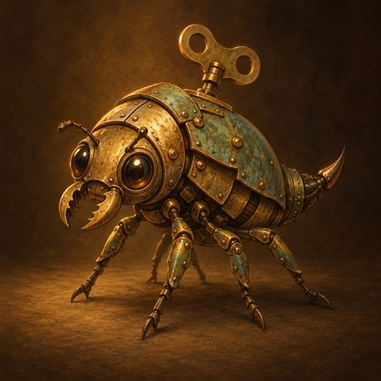
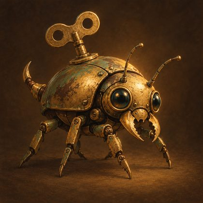
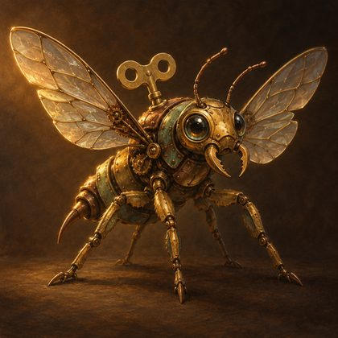
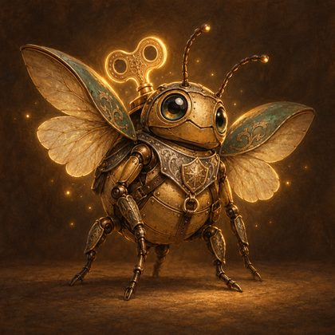

Equipment and expeditions
Five pieces of wind-up equipment, the patterns that lift them a tier, and the side chambers where patterns are found.

On this page
Your wind-ups are stronger the better they are equipped. Equipment lives in the Climb tab and is paid for in Springs.
The five pieces
| Piece | Gives, per wind-up and level | First level costs | Price grows | Appears |
|---|---|---|---|---|
| Mandibles | +1 attack | 12 Springs | 33% | Floor 1 |
| Shells | +8 health | 10 Springs | 33% | Floor 1 |
| Stingers | +3 attack | 60 Springs | 35% | Floor 2 |
| Carapace | +25 health | 50 Springs | 35% | Floor 3 |
| Wings | +80 health | 300 Springs | 37% | Floor 5 |
Each level adds to every wind-up in the swarm, so every level counts more the bigger the swarm.
Tiers and patterns
Every level of a piece costs more than the last. To make a piece much stronger, you need a pattern: a blueprint found in an expedition chamber. Applying a pattern lifts a piece to the next tier:
- Each tier multiplies the piece's per-level stats by 2.3.
- Each tier multiplies its prices by 3.
- The piece's levels restart at zero.
Tier II is the first lift. The chamber that holds a pattern is at a fixed level for each piece: ten floors per tier.
| Piece | Tier II | Tier III | Tier IV | Tier V |
|---|---|---|---|---|
| Mandibles | Level 10 | Level 20 | Level 30 | Level 40 |
| Shells | Level 10 | Level 20 | Level 30 | Level 40 |
| Stingers | Level 11 | Level 21 | Level 31 | Level 41 |
| Carapace | Level 12 | Level 22 | Level 32 | Level 42 |
| Wings | Level 14 | Level 24 | Level 34 | Level 44 |
The Climb tab always shows which chamber holds the next pattern for you. Remember that a chamber can only go as high as the floor you have already reached.
How your wind-ups look
The portrait on the Climb tab shows how far the hive's equipment has come. The look follows the tier of your equipment, not just its levels:
| Look | How it arrives |
|---|---|
| Newly made | The starting look |
| Armed | Lift Mandibles to tier II with an expedition pattern |
| Armoured | Lift the Carapace to tier IV |
| Winged | Lift Wings to tier VII |
| Veteran | A Harness brings the last look (see The Grand Winding) |



Expeditions
Expeditions are side chambers, available once you have reached floor 10 and researched Expedition Charts. You choose a chamber level in the Climb tab and pay Gearshards to enter.
- A chamber has 20 cogs of Rust.
- The first chamber, at level 10, costs 100 Gearshards. Each level above that costs 15% more.
- Chambers go only as high as the floor you have reached.
- Clearing one pays about ten minutes of the hive's gathering, a good way to top up supplies. It fills your stores but never goes past their limit.
- Your place in the tower is kept while you are in a chamber, and you return to it afterwards.
- Chambers hold patterns, and, very rarely, a curio.
Approximate Gearshard prices: level 10 costs 100; level 20 about 400; level 30 about 1,600; level 40 about 6,600; level 50 about 27,000.
Gearshards
Gearshards cannot be gathered by a job. They drop:
- from Gatekeepers, about 15% of what a chamber at that floor costs, and never less than 1.5 times the floor number;
- from the Rust on every tenth cog, a smaller drop.
Salvage choices, curios and Loft trains can all make them more plentiful. See Salvage.
Tip A good rhythm: climb until a Gatekeeper drops shards, then run the chamber that holds your next pattern. Apply the pattern, level the piece back up, and go on. The Pattern-fitter and Chart-reader helpers can do this for you; see Helpers and automation.